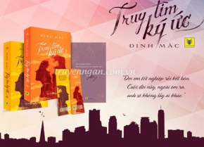

TRUY TÌM KÍ ỨC
Truy tìm ký ức là tác phẩm thứ ba về đề tài trinh thám phá án của tác giả Đinh Mặc sau Nếu ốc sên có tình yêu và Hãy nhắm mắt khi anh đến
Với lối viết logic, những tình tiết bất ngờ, khắc họa nội tâm nhân vật sâu sắc từ nhân vật chính đến các nhân vật phụ, từ nhân vật chính diện đến các nhân vật phản diện, Truy tìm ký ức đem đến cho bạn sự tò mò trong mỗi trang sách.
Nhân vật chính của câu chuyện là Hàn Trầm. Dù mất trí nhớ, anh vẫn luôn tìm kiếm vị hôn thê của mình. Cô gái bị tất cả mọi người phủ định là không có thật trong suốt 5 năm. Cũng để tìm kiếm vị hôn thê trong tưởng tượng, Hà Trầm đã đến thành phố Giang, nơi đây anh đã gặp Tô Miên, một cô gái đầy cá tính theo đuổi ngành tâm lý tội phạm. Giống Hàn Trầm, Tô Miên là nhân vật đầy bí ẩn với quá khứ trống rỗng trong suốt 5 năm. Có lẽ cuộc sống của Tô Miên sẽ rất khác nếu cô không tình cờ chạm trán với Hàn Trầm. Từ khi gặp nhau, anh đưa cô vào một thế giới hoàn toàn khác. Họ bị cuốn vào những vụ án phức tạp, cùng nhau đối mặt với S, với tổ chức 7 người đen tối cùng sự tinh vi trong từng tội ác. Hành trình tranh đấu với cái ác, lật mặt những kẻ tội đồ trong tổ chức 7 người cũng là hành trình từng bước truy tìm ký ức đã mất của 5 năm trước...
Trong quán bar, ba người đàn ông đều im lặng, đối mặt nhau. Cuối cùng, Đại Vĩ mở miệng một cách khó nhọc: "Trầm, nếu người cậu dẫn đến đây hôm nay mới là Tô Miên, vậy thì... hoặc là cậu bắt cô ta chịu tội trước pháp luật... hoặc là cậu để cô ta vĩnh viễn biến mất. Coi như bọn tôi chưa từng gặp cô ta, tuyệt đối không tiết lộ với người khác".
Bây giờ chỉ còn lại cô và Hàn Trầm. Tô Miên lặng lẽ nhìn anh tiến lại gần. Sắc mặt anh vẫn rất bình tĩnh, nếu không phải tóc hơi lòa xòa thì chẳng ai biết anh vừa xảy ra xung đột gay gắt với bạn bè. Anh dừng lại bên cô, một tay chống lên lan can, một tay đặt lên vai cô: "Em có lạnh không?".

"Khả năng quan sát không tồi, đúng là chuyện lớn." Anh kể vắn tắt suy đoán về vụ Bạch Cẩm Hi và Tô Miên tráo đổi thân phận, lược bỏ tiết lộ của Đại Vĩ sau đó.
Tô Miên trầm tư suy nghĩ. Sự thật này không khiến cô cảm thấy bất ngờ. Chỉ là nghĩ tới Bạch Cẩm Hi thật sự, trong lòng cô khó tránh khỏi tâm tình phức tạp. Cô gái đó rất có thể bị tổ chức sát thủ khống chế nên mới phẫu thuật thẩm mỹ giống cô, dù trở thành vật hi sinh nhưng vẫn cam tâm tình nguyện.
"Còn nữa...", cô chau mày, "Nếu tất cả do tổ chức sát thủ sắp xếp, vậy thì tại sao họ không giết em, mà giữ lại mạng sống của em, chẳng khác nào giữ lại mầm mống tai họa? Hơn nữa, dù tưởng em đã qua đời nhưng tại sao Đại Vĩ và Hầu Tử lại giấu anh về sự tồn tại của em bao nhiêu năm nay?".
Cô nhạy bén nắm bắt được hai vấn đề then chốt, khiến Hàn Trầm nhất thời không biết trả lời sao. Xuất phát từ bản năng của người cảnh sát hình sự, một ý nghĩ vụt qua não bộ của anh.
Nếu năm đó, cô thật sự lầm đường lạc lối, vậy thì vấn đề đầu tiên trở nên thông suốt. Vì tổ chức sát thủ coi cô là một thành viên nên mới không giết cô, thậm còn đem cô giấu đi, cho cô thân phận và cuộc sống mới.
NGUYỄN HỮU PHÚC